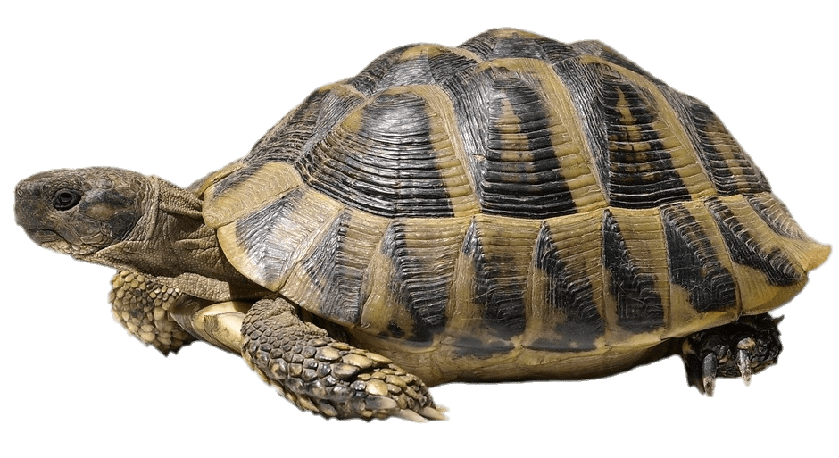
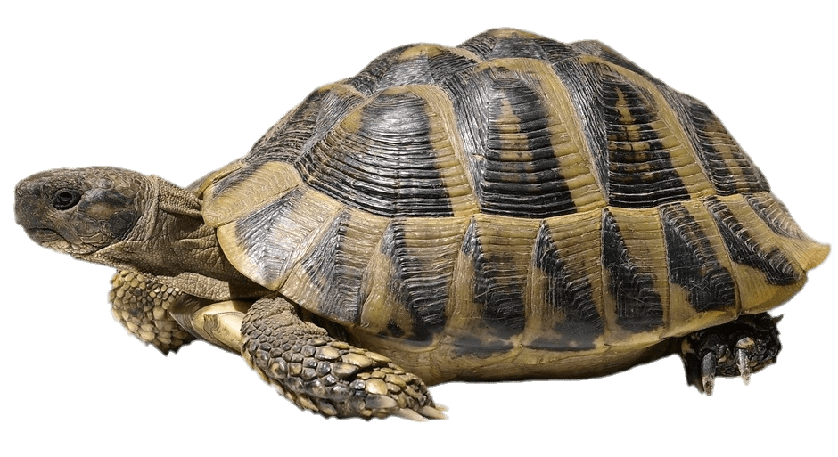
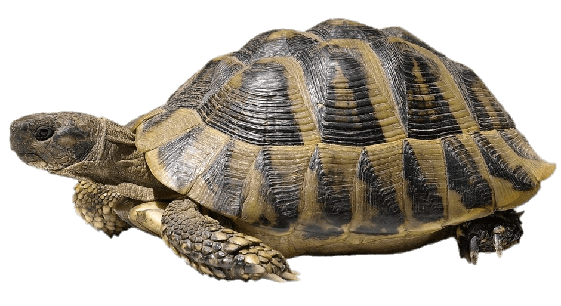
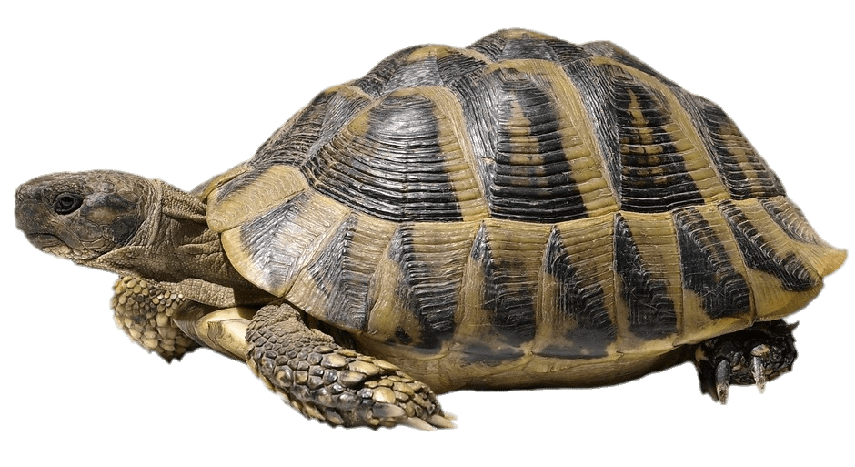

The Tortoise and the Hare
Once upon a time, in a field not too far from you, there was an energetic and happy hare and a sleepy tortoise. The happy hare was called Noel and the sleepy tortoise was called Archibald. Archibald the tortoise liked to sit and munch his dinner slowly, whilst Noel the hare would gobble up his dinner and run round and round Archibald until he was dizzy. One day, they had an argument. ‘I am the fastest animal in the whole wide world,’ said Noel. ‘I’m faster than a cheeky cheetah, a kicking kangaroo and a racing rabbit,’ he boasted. ‘Oh do be quiet,’ sighed Archibald. ‘You are so full of yourself! If you’re not careful you’ll come to a sticky end.’ ‘Where’s sticky end then?’ asked Noel. ‘Is it far from here?’ Archibald rolled his eyes and carried on munching on some tasty lettuce leaves. ‘Oh, you two do stop arguing,’ said a blackbird as he flew past. ‘No, this is serious,’ said Noel the hare. ‘I will prove to you all that I’m the fastest animal in the whole wide world!’ ‘Ok,’ said Archibald the tortoise. ‘I’ll race you then!’ Noel the hare laughed his head off. ‘Just you wait and see,’ said Archibald. ‘I’ll get Wallace the wise old owl to organise a race for us.’ Wallace the wise old owl arranged the race for the next day. All the animals in the field put on their best clothes, groomed their fur, picked up a flag to wave and got ready to cheer the tortoise and the hare on. ‘On your marks! Get set! Go!’ called Wallace. And the race was off! Slowly, slowly, Archibald the tortoise set off and quickly, quickly Noel the hare raced off and soon he was out of sight. In fact, he was so far ahead that, when he looked back, Archibald the tortoise was nowhere to be seen. ‘Gosh,’ Noel thought. ‘I’ve more or less won all ready! I think I’ll just have a little nap under this tree, it’s such a hot day.’ Noel the hare was soon fast asleep. Meanwhile, Archibald the tortoise ambled along slowly, enjoying the sun on his shell. On and on and on and on and on he plodded and taking the odd nibble of grass from time to time. He plodded past the oak tree, he plodded past the bridge, he plodded past the cow shed, he even plodded past Noel the hare who was still snoring under the tree. Archibald plodded on until he came to the finishing line where Wallace the wise old owl and all the other animals in the field were gathered. All the animals clustered around Archibald cheering and shouting. ‘Well done! Well done! You’re the winner!’ All the noise woke Noel the hare up with a start. ‘Oh my! Oh my! What’s going on? What’s all the noise? Never mind. I’d better finish the race then I can go and have my dinner,’ he thought. Noel the hare raced off down the hill towards the finishing line. But when he got there, to his horror, he saw Archibald the tortoise with a gold winner’s medal around his neck. ‘This can’t be right! He must have cheated,’ cried Noel the hare. ‘Everyone knows I’m faster than him!’ ‘Archibald the tortoise didn’t cheat,’ said Wallace the wise old owl. ‘He has won fair and square. Slowly and surely, never giving up, Archibald passed the finishing line first.’ Noel the hare looked very unhappy and sulky. Archibald the tortoise felt sorry for him and tried to cheer him up. ‘Cheer up Noel, it was only a race,’ Archibald said. ‘I’m sure you’ll win the next one. And I’d rather we were still friends than win every race under the sun.’ And from that day on, they became the best of friends and Noel the hare never boasted again.